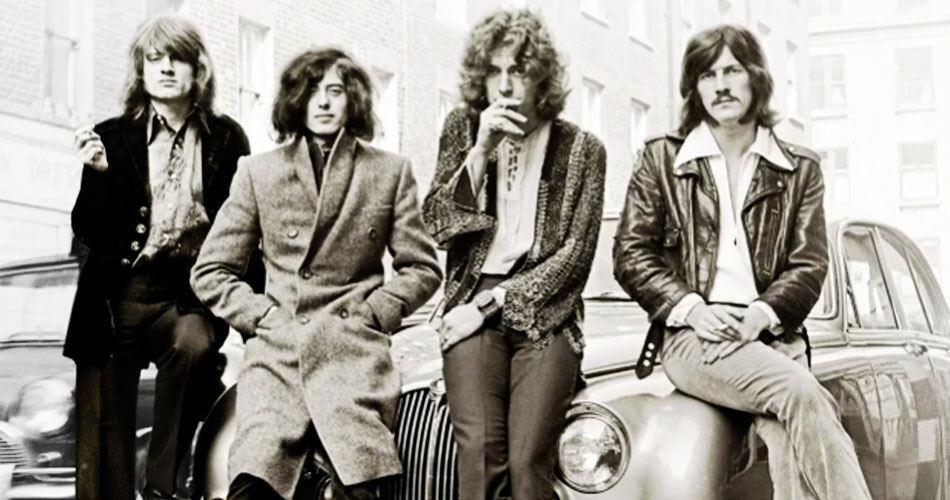

Alunos: Byanca Furlan e Luciano Smanioto
A foto abaixo revela o ritmo musical preferido da Byanca!
A foto abaixo revela o ritmo musical preferido do Luciano!
Led Zeppelin
Veja no link abaixo: apresentação ao vivo em Earls Court, em 1975:
Stairway to Heaven